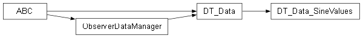

Data package¶

Submodules¶
Data.DT_Data module¶
Copyright (C) 2026 : Milad Zahediyami
This program is free software: you can redistribute it and/or modify it under the terms of the GNU General Public License as published by the Free Software Foundation, either version 3 of the License, or (at your option) any later version.
This program is distributed in the hope that it will be useful, but WITHOUT ANY WARRANTY; without even the implied warranty of MERCHANTABILITY or FITNESS FOR A PARTICULAR PURPOSE. See the GNU General Public License for more details.
You should have received a copy of the GNU General Public License along with this program. If not, see <http://www.gnu.org/licenses/>.
author Milad Zahediyami (milad.zahediyami@u-bordeaux.fr) IMS (UMR CNRS 5218 / University of Bordeaux)
DT_Data.py
Abstract base class for all data sources in the Digital Twin system. Implements ObserverDataManager to support the Observer Pattern.
It maintains a list of observers (Models and Services) and notifies them automatically when data is updated via update_data().
- class Data.DT_Data.DT_Data[source]¶
Bases:
ObserverDataManager,ABCAbstract base class representing a source of data (the “Physical Twin” side of the Digital Twin).
Data.DT_Data_SineValues module¶
DT_Data_SineValues.py
Concrete data class that generates and stores sine wave values. Every time 10 new values are added, it triggers notification to all observers using the Observer Pattern.
This represents the “Physical Twin” part of the Digital Twin.
This is the Python equivalent of Data/DT_Data_SineValues.java.
@author Zeeshan ALI, Mamadou Kaba TRAORE @version 1.0 (Python port)